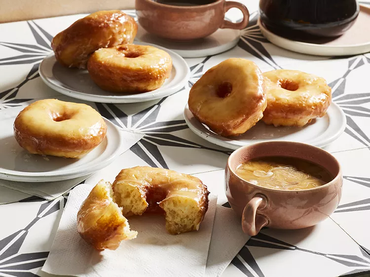

Glazed Doughnuts

For pillowy doughnuts similar to those from popular nationwide bakeries, this recipe uses tangzhong or "water roux," a baking technique with origins in Japan. They are topped with a vanilla glaze.
Ingredients:
tangzhong:
- ⅓ cup milk
- ⅓ cup cake flour
Doughnuts:
- 1 cup milk
- 4 ¼ cups cake flour, plus more for dusting
- 1 package active dry yeast
- 5 ounces evaporated milk
- ½ cup butter, melted and cooled
- 2 large eggs
- ¼ cup sugar
- 1 teaspoon salt
- 1 teaspoon vanilla extract
- 4 cups vegetable oil for frying
Vanilla Glaze:
- 3 cups powdered sugar
- ½ cup melted butter
- 1 tablespoon vanilla extract
- ⅛ teaspoon salt
- 6 tablespoons hot water
Steps:
- For tangzhong, whisk together 1/3 cup milk and 1/3 cup cake flour in a small saucepan. Cook, stirring constantly, over medium heat until a very thick paste forms, about 3 minutes (watch constantly—it thickens quickly). Cool briefly.
- Heat 1 cup milk in a second saucepan to 105 degrees F to 115 degrees F (40 degrees C to 46 degrees C). Transfer warm milk to the bowl of a stand mixer; stir in yeast and let stand for 5 minutes.
- Add evaporated milk, melted butter, eggs, sugar, salt, vanilla, the cooled tangzhong, and 2 cups cake flour to the stand mixer. Using the paddle attachment, beat at low speed until mixture is smooth, about 3 minutes. Gradually beat in remaining 2 1/4 cups cake flour to make a soft dough. Continue beating at low speed until dough is smooth, 2 to 3 minutes. Dough will be soft.
- Turn dough out onto a lightly floured surface. Knead dough until smooth, 2 to 3 minutes, adding 2 to 4 tablespoons additional cake flour. Be careful not to add too much flour. (If dough begins to stick to surface, use a bench scraper to lift dough from surface and add a dusting of flour. If your dough is too soft to knead, chill covered for 2 hours or up to overnight before kneading.) Shape dough into a ball. Transfer to a lightly greased bowl, turning once to grease surface; cover. Let rise in a warm place until doubled in size, 1 to 1 1/2 hours.
- Punch down dough and turn out onto floured surface. Roll dough into a 10x15-inch rectangle about 1/2-inch thick. If dough springs back, let it rest an additional 10 minutes. Lightly flour 2 large baking sheets.
- Cut dough using 3-inch and 1-inch round cutters to create doughnuts and doughnut holes. Arrange cutouts 1 inch apart on the prepared baking sheets. Cover with a towel and let cutouts rise in a warm place until very light and fluffy, about 1 hour. [If you have scraps, gently knead together, being careful not to overwork dough; let rest 10 minutes before cutting.]
- Arrange wire racks in two 10x15-inch rimmed baking pans (one for cooling, one for finished glazed doughnuts).
- About 20 minutes before doughnuts are done rising, pour oil to a depth of 2 1/2 to 3 inches into a large skillet or a deep-fat fryer. Heat to 365 degrees F (185 degrees C).
- Working in batches of 2 to 3 doughnuts, fry, turning once halfway through, until golden, about 90 seconds. Transfer to prepared cooling rack to cool slightly. Repeat with remaining doughnuts. For doughnut holes, working in batches, fry, constantly moving with a slotted spoon, until evenly golden, about 1 minute. Transfer to prepared rack to cool slightly.
- Whisk together powdered sugar, melted butter, vanilla extract and salt in a bowl to make the vanilla glaze. Whisk in hot water, 1 tablespoon at a time, until desired consistency. If glaze thickens, stir in additional hot water, 1 teaspoon at a time.
- Dip warm doughnuts and doughnut holes into vanilla glaze, turning to coat both sides. Arrange doughnuts on the second prepared rack to allow glaze to set, about 30 minutes.